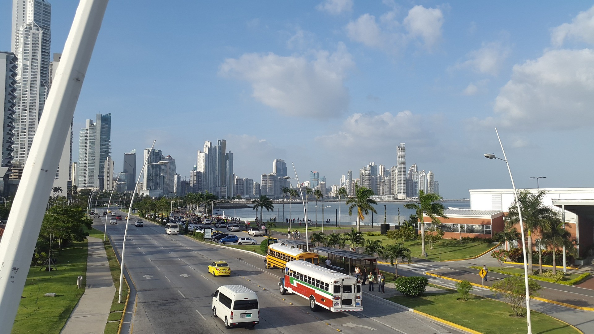

Canal do Panamá
O Canal do Panamá é uma das mais impressionantes obras de engenharia do mundo, ligando os oceanos Atlântico e Pacífico.

Cidade do Panamá
A Cidade do Panamá é um centro cultural vibrante, conhecido por sua arquitetura moderna e rica história colonial.

Bocas del Toro
Bocas del Toro é um arquipélago famoso por suas praias de areia branca e vida marinha diversificada.
Canal do Panamá
Cidade do Panamá
Bocas del Toro